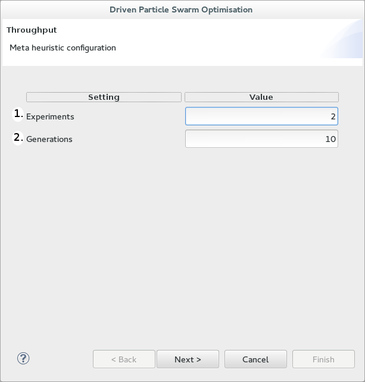

Starting a dPSO: Hill Climbing configuration

The above is a screen shot of the first page of the CPT dPSO wizard. In this page you are configuring the Hill Climbing parameters:
- Experiments - Choose the number of times you would like to run a Hill Climbing algorithm.
- Generations - Choose the number of iterations that the Hill Climbing algorithm is allowed to run for.